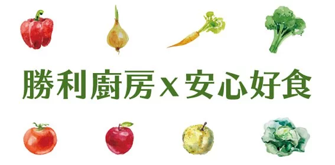

勝利廚房
基本資料
團體介紹
2014年深秋，有感於「食安其實是人心的問題」，勝利廚房誕生於在台北社企大樓闢建國際雙認證的中央廚房，現已遷移至台北市興岩全齡園區。發揮身障團隊「專注、本分」的特質，打造一座高效能的安心好食產製基地，全系列產品堅持100%純天然、拒絕人工添加及防腐劑，也成為全國第一家以高規央廚提供多元身心障礙者就業的社會企業，由台北市政府頒發社會企業認證。
勝利廚房位於台北市興岩全齡園區，結合同屬勝利基金會的樸樹咖啡，提供給大家更優質完善的餐飲體驗，也為身障就業開創更多永續共好的可能。
勝利基金會強調「工作價值」，期望身障者經由產能贏得工作尊嚴，因此堅持不主動募款，以具有市場競爭力的產品與服務品質，來與社會大眾對話。
服務介紹
勝利廚房有高規的生產設備、穩定的作業團隊，能為企業提供安心好食的客製服務。如果您重視食品的安全，也認同「扶他一把好工作」的社會價值，歡迎與我們合作， 進行符合CSR或ESG的永續採購，共同推動「有責生產、有擇消費」的良善未來。
- 門市餐飲服務
- 線上購物 (自取/超取/宅配)
- 企業會議餐食 (可依預算客製化)
- 企業場地租借服務 (最多可容納40人)
- 企業大宗採購，單一品項如有採購30盒以上，可享95折、低溫免運的服務
- 企業茶水間特選咖啡豆